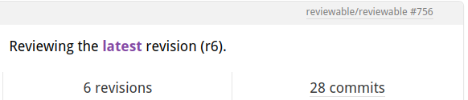

Tips and Tricks
Videos
We're trying out a new video format where an engineer goes through a real code review while we kibbitz and give them tips on using Reviewable:
There's a growing collection of tips in screencast format, if that's what you prefer, including:
- What's the fastest way to check out your review code?
- Keyboard shortcuts for efficient reviews
- Customizing keyboard shortcuts
- Customizing code review completion conditions
Articles
Here are some articles and blog posts on code reviews that we found worth reading:
Visual tweaks
Reviewable doesn't have a lot of settings exposed in the UI to customize how things look to keep things simple. However, you can easily inject a custom stylesheet to override styling on a wide range of elements. Here are some commonly requested examples.
Line numbers
Reviewable doesn't show line numbers in the diff for a number of reasons — there's a long discussion in issue #147. The snippet below overrides this. It's not perfect but it should work in the vast majority of cases:
div[data-line-number]:not([data-line-number="0"]):before {
content:attr(data-line-number);
position:absolute;
color: #444;
padding: 1px 3px 3px;
font-size: x-small;
display: block;
width: 20px;
text-align: right;
}
div[data-line-number]:not([data-line-number="0"]) div.hljs {
margin-left: 26px;
}
If you don't need to tweak these styles, just paste https://gist.githack.com/pkaminski/4fd7c7b9014856de32bb43f84a396772/raw/line_numbers.css into the custom stylesheet field.
Be careful though: by changing the layout in this way, Reviewable won't be able to automatically pick a diff width that fits your window so you'll need to control it manually.
Diff line background
When in side-by-side diff mode, Reviewable doesn't highlight the whole line — just the deltas. If you'd prefer the full line to also be highlighted like in unified diff mode you can use these styles:
.two.column.diff .diff.line:not(.keep) .line.wrapper:not(.empty) .left.line.content {
background-color: #FBDDDD; /* rgba(91, 220, 114, 0.20) on white */
}
.two.column.diff .diff.line.base:not(.keep) .line.wrapper:not(.empty) .left.line.content,
.two.column.diff .diff.line.whitespace:not(.keep) .line.wrapper:not(.empty) .left.line.content {
background-color: #FFF7F7; /* rgba(91, 220, 114, 0.05) on white */
}
.two.column.diff .diff.line:not(.keep) .line.wrapper:not(.empty) .right.line.content {
background-color: #DDF7E2; /* rgba(91, 220, 114, 0.20) on white */
}
.two.column.diff .diff.line.base:not(.keep) .line.wrapper:not(.empty) .right.line.content,
.two.column.diff .diff.line.whitespace:not(.keep) .line.wrapper:not(.empty) .right.line.content {
background-color: #EFFCF1; /* rgba(91, 220, 114, 0.05) on white */
}
.two.column.diff .diff.line .left.line.content .delta {
background-color: rgba(240, 92, 92, 0.30);
}
.two.column.diff .diff.line.base .left.line.content .delta,
.two.column.diff .diff.line.whitespace .left.line.content .delta {
background-color: rgba(240, 92, 92, 0.15);
}
.two.column.diff .diff.line .right.line.content .delta {
background-color: rgba(91, 220, 114, 0.30);
}
.two.column.diff .diff.line.base .right.line.content .delta,
.two.column.diff .diff.line.whitespace .right.line.content .delta {
background-color: rgba(91, 220, 114, 0.15);
}
Or just use this link: https://rawgit.com/pkaminski/2922da3d58f76a8ed7bf/raw/highlight_lines_in_two_columns.css.
Victory bunny
Don't like the merge bunny? Turn it off like this:
.victory.decor {display: none}
Accessibility
This snippet can be used to alter the diff colors for additions and removals, making them standout more. This may be helpful for those with Deuteranopia/Protanopia (green/red color blindness).
:root {
--diff-add: 33, 150, 243;
--diff-remove: 255, 235, 59;
}
The three values for each variable correspond to R,G and B color values and can be used to set the diffs to whatever colors you'd like. Do not add the rgb() wrapper around the values.
Removing wavy lines on collapsed regions
Want to turn the wavy lines off to simplify how collapsed diff regions look? This snippet will do the trick:
.review-page .file.root .file .wavy.edge {
background-image: none;
}
.review-page .file.root .file .top.wavy.edge {
margin-top: 1em;
margin-bottom: -0.5em;
}
.review-page .file.root .file .bottom.wavy.edge {
margin-bottom: 0.5em;
}
.review-page .file.root .file .declaration.include {
padding-top: 1em;
}
You can also use this link: https://rawcdn.githack.com/earlAchromatic/reviewable-custom-styles/6e35f21b6fa3d3978a4ae5f8ba0f23e2d5d6a475/no-wave.css
Skipping reviews of vendored dependencies
Depending on your package manager, you sometimes need to commit dependency source code into your repository but don't necessarily want to review updates to those hundreds or thousands of files every time you update. Reviewable offers a few helpful features for this situation, from least to most invasive:
- Suppress diffs for vendored files via
.gitattributes. - Use a custom review completion condition to group vendored files in the file matrix, which will allow you to mark them all as reviewed with one click.
- Use a custom review completion condition to preemptively treat all such files as reviewed. This is the nuclear option and should work by itself, or you can combine it with the previous options for more flexibility.
Ignore comments by bots
When a user posts a comment (whether via Reviewable or GiHub), we automatically snapshot all revisions to ensure that the comment's context is preserved. This can lead to a mess, though, if you're taking your time pushing commits to a PR before asking for a review and a bot (perhaps CI?) is posting comments as you go. There can be dozens of snapshotted revisions by the time you invite a reviewer!
To avoid this situation, Reviewable attempts to detect whether a comment was posted by a bot and avoids snapshotting revisions in that case. We detect bots by checking whether the username ends with [bot] (for GitHub app bots) or -bot, or the display name ends with (bot). If you have a favorite bot account changing its username could be tricky, but it should be easy to append (bot) to its name since that oughtn't be referenced anywhere.
Easy local revision checkout
TLDR
git fetch origin refs/reviewable/pr756/r6
git checkout FETCH_HEAD
Explanation
Reviewable stores references to commits associated with each revision on Github. This has a handy side effect of making it easy to checkout a local copy of any revision from any Reviewable pull request.
This can be done in two steps.
- Get a reference to the pull request or revision of interest.
- Checkout or make use of that reference.
1. Get the revision reference
If your prId were 756 and your desired revision were 6 as in the image above, you would store revision reference in .git/FETCH_HEAD constant using
git fetch origin refs/reviewable/pr756/r6
Note that the form of the reviewable reference titles as shown above is refs/reviewable/pr${prId}/r${revisionId} .
The ids prId and revisionId are available by inspection on the reviewable.io. review page:

You can also just explore the references using the git client, by typing a reference name partially, as in git fetch origin refs/reviewable/, and then use tab completion to get your options.
2. Use the revision reference
After saving the FETCH_HEAD reference as described above, you can use it as you see fit.
For example check out the revision code using
git checkout FETCH_HEAD
or glance at the log using
git log -n 1 --oneline FETCH_HEAD